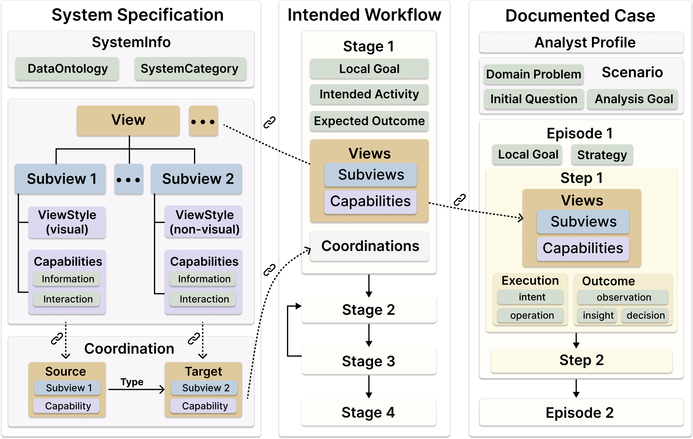
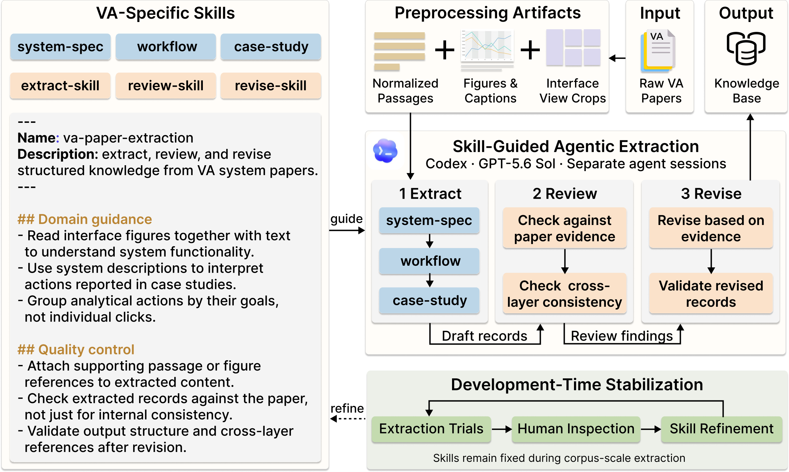
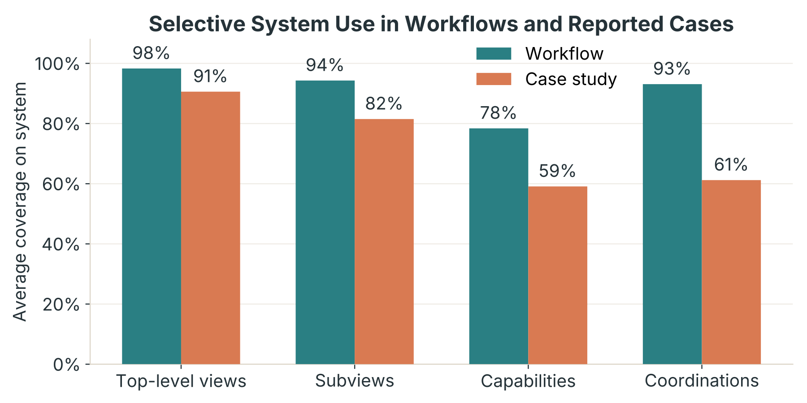
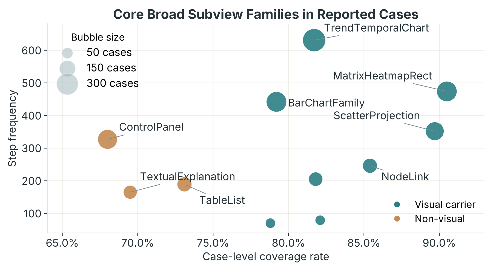
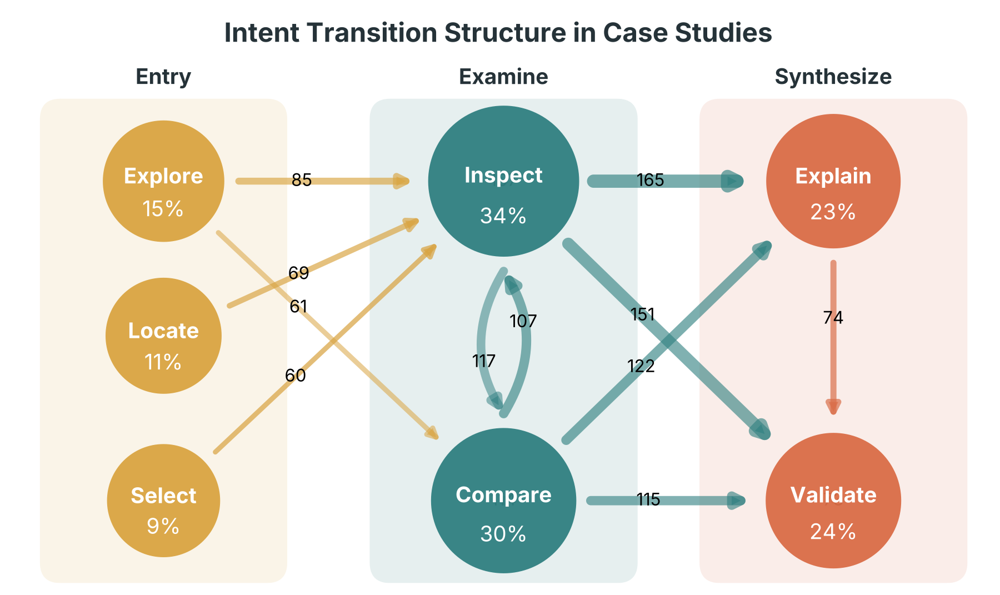
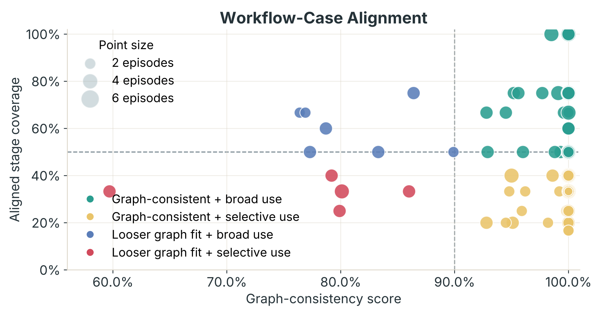
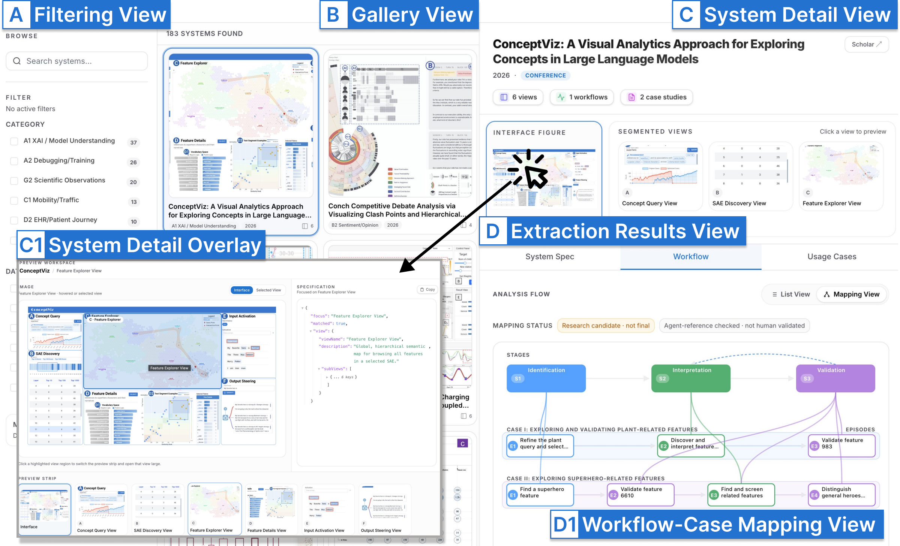

Skill-guided extraction
The framework relies on reusable task-specific skills that encode extraction guidance, review criteria, segmentation rules, and operating protocols for recovering structured records from VA papers.
This project builds a structured knowledge base of visual analytics usage from 183 papers, linking system design, intended workflows, and reported case-study practice through a skill-guided agentic extraction framework.
Visual analytics (VA) research has produced a large body of system papers, and prior work has characterized these systems primarily from a design perspective. However, comparatively less attention has been paid to systematically capturing how VA systems are used in analytical practice across the literature. Understanding VA usage is important because it reveals how systems support analytical work in practice and enables the identification of recurring patterns that can inform future VA theory. Yet studying VA usage at scale from the literature is difficult because such knowledge is rarely formalized in a comparable form. It is conveyed mainly through narrative case studies and must be interpreted together with system and workflow context scattered across different parts of papers. To address this gap, we develop a skill-guided agentic extraction framework for extracting structured knowledge about VA systems, intended workflows, and usage cases from the literature, and augment it with a self-evolving mechanism that iteratively refines the skills used to guide LLM-based agents. We evaluate the framework through sampled human assessment and LLM-as-a-judge evaluation, demonstrating that it can reliably extract structured usage knowledge from VA papers. Applying the framework to 183 papers, we construct a knowledge base of VA usage and conduct a large-scale analysis of patterns in case studies, patterns in intended workflows, and their relationships through comparison, thereby providing a systematic answer to how VA systems are used in analytical practice. We further demonstrate the utility of the knowledge base through two applications: an interactive web interface for browsing and inspection, and a benchmark for predicting the next analytic move constructed from the knowledge base, where its retrieval-augmented use improves prediction performance.
Schema Design

The schema is designed to connect three complementary perspectives that are usually scattered across a paper: what the system contains, how the authors intend it to be used, and how it is actually used in reported case studies.
The first layer captures system specification, including views, subviews, capabilities, coordinations, and system-level context. The second layer models intended workflows as stages and transitions grounded in system components. The third layer represents real usage through case-study episodes and steps, linking analyst intent, operations, and outcomes to the system.
By designing these three layers jointly, the project makes it possible to compare design, intended process, and observed analytical practice in one common representational space.
Method

The framework relies on reusable task-specific skills that encode extraction guidance, review criteria, segmentation rules, and operating protocols for recovering structured records from VA papers.
Extraction is carried out by a Codex-based agent that works through staged extract, review, and revise cycles, uses a local workspace, and jointly grounds decisions in text, figures, captions, and interface crops.
The framework includes a self-evolving mechanism that first stabilizes the skills through human-supervised review, then scales through dynamic and stable knowledge layers that accumulate reusable lessons across papers.
Findings




Resources
An interactive interface for browsing the corpus, inspecting extracted records, and examining workflow-case mappings.
Open Explorer
The repository contains the extraction framework, released artifacts, and supporting code for the project.
View on GitHubThe 183-paper corpus used for analysis is listed below and available as a downloadable spreadsheet.
Download XLSXCorpus
Loading corpus...
| Title | Year | Link |
|---|